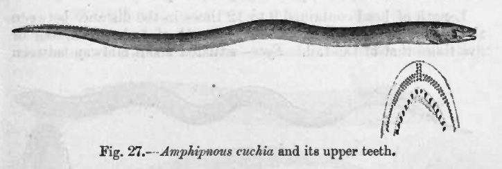

कुचियाCuchia
Monopterus cuchia · Synbranchidae · FSH-0024

- Scientific nameवैज्ञानिक नाम
- Monopterus cuchia (Hamilton, 1822)
- Familyकुल
- Synbranchidae
- Hindiहिंदी
- कुचिया
- Local namesस्थानीय नाम
- kuchia, cuchia, kuchiya, kuchia baam, mud eel
- Status hereयहाँ की स्थिति
- native
- Movementआवागमन
- Resident, here all year
- IUCNIUCN
- LC
- Reviewसमीक्षा
- audited and independently read
When to look कब देखें
Present all year.साल भर मौजूद।
Uses and possibilities उपयोग और संभावनाएँ
Drawn from the documented uses in the profile below, where each is labelled traditional, current or a research lead. All uses →
Tell it apart from इनसे अलग पहचानें
कुचिया / Cuchia
Monopterus cuchia (Hamilton, 1822) — Synbranchidae
कुचिया — बिना पंखों की लंबी मछली, जो गंगा के मैदान में दलदल और कीचड़ में रहती है। ईल जैसी, काली-पीली धारीदार, और लगभग सब कीचड़ वाले तालाब में मिल जाती है। रात को निकल कर छोटे जानवरों का शिकार करती है, और दिन में गहरी सुरंग में छिपी रहती है। जहाँ सूखी हो या बाढ़ न आए, तो कीचड़ में दबकर हवा साँस लेती है और ज़िंदा रहती है। साधारण खिचड़ी पकवान इसी से बनती है।
Quick Identification त्वरित पहचान
| Feature | Description |
|---|---|
| Size | 25–50 cm, occasionally to 70 cm |
| Shape | Eel-like, cylindrical body; no dorsal, anal or pelvic fins; a small tail fin |
| Colour | Dark brown to olive-black with yellowish or white bars and spots; paler below |
| Head | Small, pointed, with a small mouth and small eyes |
| Gill opening | A single slit on the underside of the head, not on the side |
| Behaviour | Nocturnal, burrowing; seen at the surface in monsoon |
Field tip: A long, dark, eel-like fish with no side fins, living in muddy ditches and ponds. A single nostril at the mouth and a gill opening beneath the head distinguish it from true eels. Most often seen at night in monsoon water when it leaves its burrow to hunt.
हिंदी — कैसे पहचानें: लंबी, काली-पीली, ईल जैसी, कोई पंख नहीं। मुँह पर एक नथुना, गिल सिर के नीचे। सूखे मौसम में कीचड़ में गायब; बरसात में निकल आती है।
Morphology आकारिकी
Biometrics (plains populations):
| Measurement | Range |
|---|---|
| Total length | 25–50 cm |
| Diameter | 8–15 mm |
| Gill opening | 3–5 mm |
| Teeth | Small, pharyngeal |
| Eggs per female | 100–500 |
Body: Elongate, cylindrical, without paired fins. The skin is smooth and covered in a protective mucus. The body tapers gradually to a pointed tail. The lateral line is complete, running the length of the body.
Head and sensory organs: The head is small and pointed. The eyes are small and functional but not prominent. Chemoreceptors on the head and body sense vibrations and chemical cues. A single dorsal nostril at the mouth is used for air-breathing.
Gill and respiratory system: The gill is enclosed in a single opening on the underside of the head, not on the side like typical fish. The gill chamber connects to a chamber above the gills that serves as an air-breathing organ, allowing the fish to extract oxygen from air when the water becomes anoxic.
हिंदी: लंबा, बेलनाकार, पंख नहीं। चिकनी त्वचा, श्लेष्म से ढकी। सिर छोटा, तीक्ष्ण। आँखें छोटी, काम करती हैं। एक नथुना हवा के लिए। गिल एक स्लिट, नीचे की ओर। गिल के ऊपर हवा साँस लेने का कक्ष।
Behaviour & Ecology व्यवहार और पारिस्थितिकता
A creature of the mud. It burrows deep in the soft bottom of ditches, canals and ponds, where it waits at night for small fish, insect larvae, crustaceans and worms to venture near. It emerges into the water column to hunt, moving with undulating motions of the body. The air-breathing chamber allows it to survive in anoxic mud for months; in the dry season, it sits dormant and breathes air only. In monsoon, with water rising, it becomes active and visible, and is easily caught. It cannot survive in fast water and is absent from flowing rivers, though present in slow backwaters.
In traditional fisheries, cuchia is targeted specifically in monsoon in seasonal channels and in canals, where it is abundant and easy to net.
हिंदी: कीचड़ की मछली। नीचे गहरी सुरंग में। रात को निकलकर छोटी मछलियाँ, लार्वे, झींगे, केंचुए शिकार करती है। शरीर लहरें लहराता हुआ चलती है। ख़राब ऑक्सीजन सहती है, महीनों कीचड़ में सोती है, हवा साँस लेती है। बरसात में सक्रिय। तेज़ पानी में नहीं।
Life Cycle / Phenology जीवन चक्र
| Stage / season | Event |
|---|---|
| April–May | Maturity; movement to deeper water |
| June–July | Migration to flooded paddies and shallow channels |
| June–August | Spawning; eggs scattered on submerged vegetation or in burrows |
| Eggs, 5–7 days | No parental care; hatching in warm water |
| Larvae, 1–2 weeks | Yolk absorption; development to miniature fish |
| Juveniles, 1–2 months | Growth to 5–10 cm; taking small invertebrates |
| May–October | Active feeding and growth |
| November–April | Reduced activity; burrowing in mud; dormancy in dry season |
| 2–3 years | Sexual maturity |
हिंदी: जून-जुलाई में प्रजनन; अंडे पानी के पौधों पर या सुरंग में; माता की देखभाल नहीं; एक-दो हफ़्ते में विकास; महीने भर में बड़े हो जाते हैं; दो-तीन साल में बालिग़।
Host Plants or Prey आहार
- Small fish: Zebrafish, Mola Carplet fry, and other small fish eggs and young.
- Insect larvae: midge larvae, small dragonfly nymphs, mosquito larvae.
- Crustaceans and worms: small shrimp, ostracods, earthworms and aquatic worms.
- Detritus when prey is scarce.
Predators / Natural Enemies शत्रु
- Birds: Indian Pond Heron, Little Egret on small individuals.
- Fish: Large Great Snakehead, Stinging Catfish.
- Others: Large aquatic insects, giant water bugs on small fish.
- People: netted and eaten; the main purpose of capture.
Agricultural / Human Relevance कृषि प्रासंगिकता
Food. Caught in monsoon when abundant and easily netted in canals and flooded paddies. The flesh is tender and mild; prepared boiled or in curries. A protein of fishing communities and rural families. The dish khichdi (a rice and lentil mixture) is sometimes made specifically with cuchia, called kuchia khichdi.
Rice paddies. Harmless; a neutral species. Its burrowing in soft paddy mud does not cause damage. Its presence is considered a sign of a reasonably clean paddy.
Traditional and Ethnobotanical Use: none recorded specifically for this species.
Today. Abundant in suitable habitats; a seasonal catch in monsoon.
Research direction (a lead, not a result). The burrowing behaviour, air-breathing ecology and dormancy patterns in the dry season are poorly documented for the region; a record of burrow depth, air-breathing frequency and survival duration without water would establish the physiological basis for its success in harsh habitats.
हिंदी: बरसात में पकड़ी जाती है। मांस मुलायम, हल्का। खिचड़ी में बनती है। मछुआरा समुदाय इसे खाते हैं। धान के खेतों में नुकसान नहीं। कीचड़ की गहराई, हवा साँस लेने की व्यवस्था, और सूखे में सोना — सब कुछ अच्छी तरह जाना नहीं जाता।
Expected Locally स्थानीय रूप से अपेक्षित
Not a field record. Written from published accounts for eastern Uttar Pradesh. No confirmed local sighting yet — if you have seen it, that is what the atlas needs.
अभी तक स्थानीय पुष्टि नहीं। यह विवरण प्रकाशित स्रोतों से है, किसी अवलोकन से नहीं।
To be expected in muddy ditches, canals and rice paddies throughout the district. Most visible in monsoon when water levels rise and the fish becomes active. A photograph or a caught specimen is a confirmed record.
Distribution वितरण
Global range: Native to the Indo-Gangetic plain from Pakistan through India to Bangladesh and Myanmar.
In India: Throughout the Ganga system and associated flood plains; widespread in the north-east.
In Uttar Pradesh: Throughout the northern and eastern plains, particularly in paddy-growing areas.
In Basti district / eastern UP: Expected in all muddy still-water habitats; abundant in monsoon.
Research Questions शोध प्रश्न
Anyone can investigate these | कोई भी इन प्रश्नों की जाँच कर सकता है
- How deep are cuchia burrows in your village ditch, and how many fish are in each burrow? / आपकी गाँव की नाली में कुचिया की सुरंग कितनी गहरी है, और हर एक में कितनी मछलियाँ? — Dig carefully in monsoon.
- Can a cuchia survive out of water in mud for a month? — Keep a fish in moist mud and observe.
- What is in the stomach of a cuchia caught in monsoon, and what in the dry season? — Compare diet by season.
- How often does a cuchia come to the surface to breathe air? — Observe in a tank for several hours.
- In which months are "berried" females (carrying eggs) caught, and how many eggs? — Examine females throughout the year.
Similar Species मिलती-जुलती प्रजातियाँ
| Species | How to tell apart | हिंदी |
|---|---|---|
| Tire-track eel (Mastacembelus armatus) | Larger (30–100 cm); many spots on body; a spiny dorsal fin; elongate snout | बड़ी, धब्बों वाली, पीठ पर काँटे |
| Climbing Perch (Anabas testudineus) | Much smaller (5–20 cm); dorsal and anal fins present; no burrows | बहुत छोटी, पंख हैं |
| Loach (Lepidocephalus spp.) | Smaller; flattened ventrally; barbels around mouth; bottom-feeding | छोटी, पेट से चपटी, दाढ़ी |
Field rule: A long, dark, eel-like fish with no side fins, a single gill opening below the head, and a single nostril at the mouth, living in mud, is the cuchia; the air-breathing chamber and dormancy distinguish it from true eels.
Taxonomy & Classification वर्गीकरण
Original description. Described by Hamilton in 1822 as Synbranchus cuchia in An Account of the Fishes Found in the River Ganges and Its Branches, p. 171, from the Ganga and other Bengali rivers. The specific epithet cuchia is the Bengali vernacular name.
Subspecies. Monotypic — no subspecies are currently recognised.
Family and order placement. Synbranchidae, the swamp-eel family; order Synbranchiformes. The genus Monopterus ("single fin") contains several air-breathing Asian swamp eels.
Phylogenetic notes. Monopterus is monophyletic and sister to other Synbranchidae. The order Synbranchiformes is ancient and basal among teleosts.
IUCN status rationale. Least Concern. Widespread in suitable habitats; no range contraction documented.
Photo Gallery फोटो गैलरी
Photos needed आवश्यक फोटो
- [ ] Adult in water showing body and head (पानी में शरीर और सिर)
- [ ] Close-up showing gill opening and nostril (गिल स्लिट और नथुना)
- [ ] Burrow in mud (कीचड़ में सुरंग)
References संदर्भ
- Hamilton, F. (1822). An Account of the Fishes Found in the River Ganges and Its Branches, p. 171. Edinburgh University Press. [original description, as Synbranchus cuchia]
- Day, F. (1878). The Fishes of India, vol. 1. Williams and Norgate, London.
- Jhingran, A.G. (1991). Fish and Fisheries of India, 3rd ed. Hindustan Publishing Corporation, Delhi.
- Kumar, K. & Dey, S.C. (1993). Induced spawning and larval rearing of Monopterus cuchia. Journal of Aquaculture in the Tropics 8: 227–231.
- Hora, S.L. & Pillay, T.V.R. (1962). Handbook of fish culture in the Indo-Pacific region. FAO Fisheries Biology Technical Paper no. 14.
- GBIF Occurrence Data — Monopterus cuchia, India (2026).
Source file: species/fauna/fish/cuchia.md